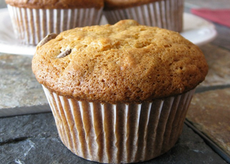

Banana Muffins

Description
Banana muffins.
Ingredients
- 1/3 cup butter, melted
- 1 egg
- 1 1/2 cups all-purpose flour
- 1 teaspoon baking powder
- 1 teaspoon baking soda
- 1/2 teaspoon salt
- 3 large bananas, mashed
- 3/4 cup white sugar
Steps
- Preheat oven to 350 degrees F.
- Sift together flour, baking powder, baking soda, and salt.
- Combine bananas, sugar, egg, and melted butter.
- Fold in flour mixture, and mix until smooth.
- Scoop into muffin pans. Bake for 10-15 minutes.
Index